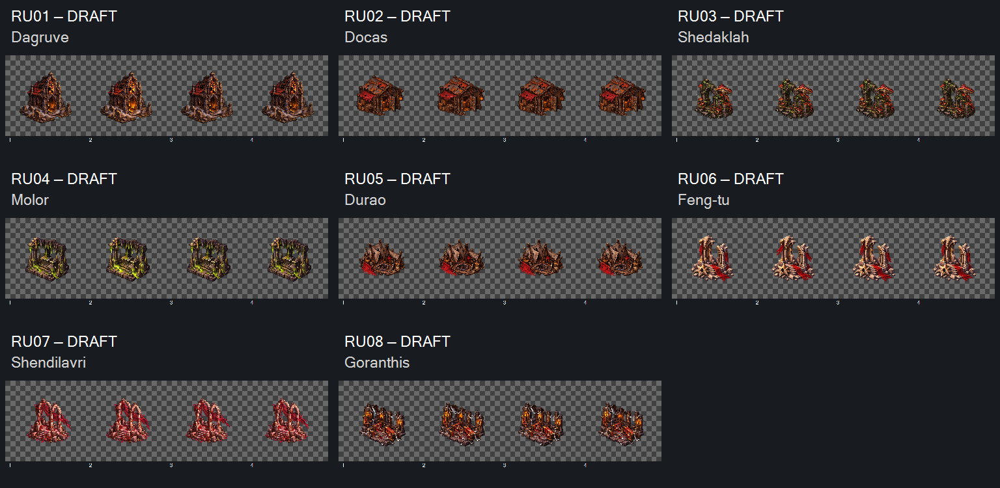

DRAFT — direção visual aceita em2026-10-16. Oito entradas em15tentativas preservadas; preparação e implementação com Claude.
Três peças retidas após limite de três tentativas: RU05 Durao e RU07 Shendilavri têm deriva horizontal relevante; RU08 Goranthis toca divisões e tem deriva. Recortes RU08 podem conter conteúdo da célula vizinha. Não admitir esses ciclos. RU08v01 é a melhor tentativa preservada; v02/v03 não corrigiram o defeito.
Conferir identidade por bioma, rigidez da arquitetura e sutileza do movimento4→1. Tendas e fogueira apagada continuam nesse estado. As outras cinco entradas não tocam a banda4px, mas seguem com alfa/margens/registro para preparação; Dagruve tem só4px de folga. Nenhuma fonte atingiu64px em todos os quadros.
Prévia preserva células e proporções nativas, sem alinhamento escondido. Medidas não comprovam pivô semântico, fluidez ou integração. Aceite parcial por código/revisão permitido; aceite de direção não libera retenção técnica.
Entrega para Claude · Manifesto · Medidas · Prompts · Referências · Origens · Controles offline · Integridade

Controles testados por simulação DOM offline, sem render de navegador. Nenhuma admissão, implementação, promoção CANON ou playtest.
Recibo de aceite visual. Três retenções técnicas preservadas.